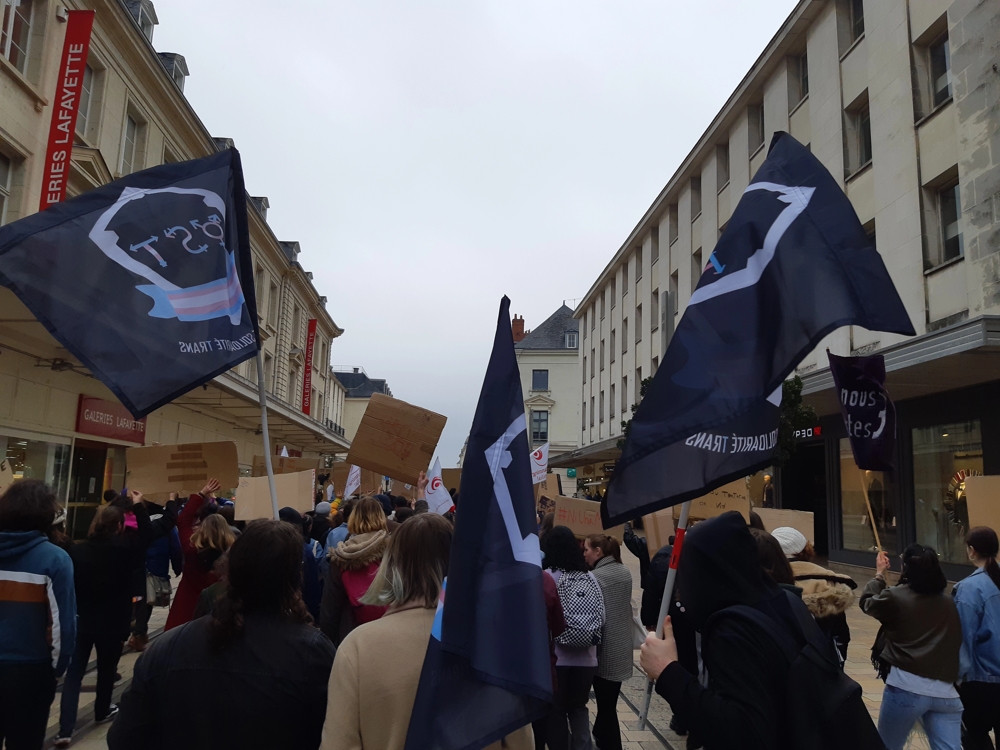

Qui sommes nous ?
Nous sommes l’Organisation de Solidarité Trans, une association d’autosupport et de lutte par et pour les personnes trans.
Basées à Tours, nous nous sommes fondées en novembre 2021. Nous luttons pour l’amélioration des conditions matérielles d’existence des personnes trans.